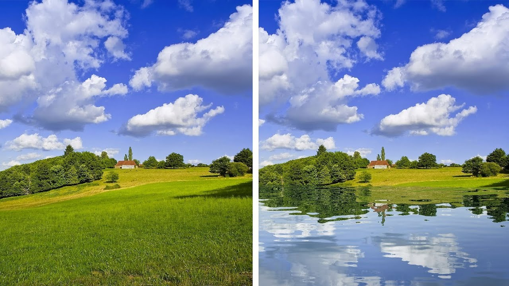
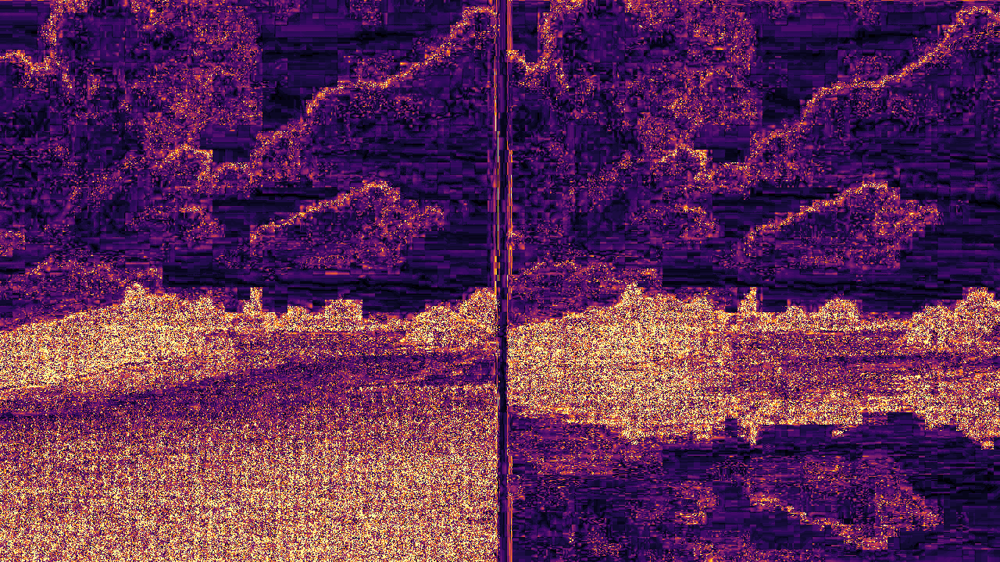
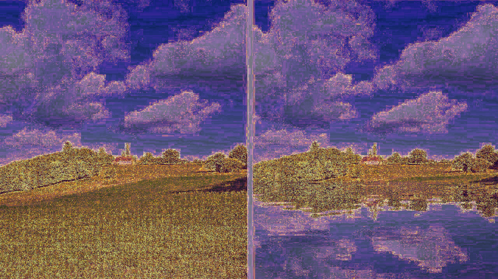
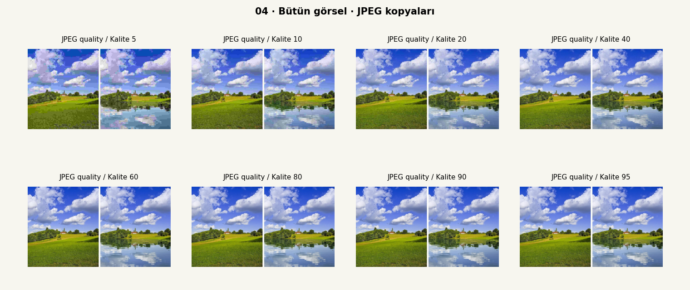
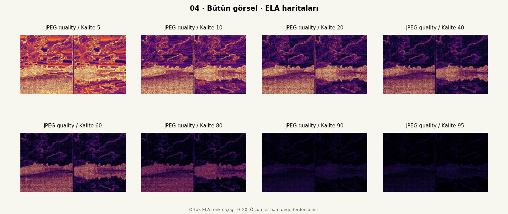
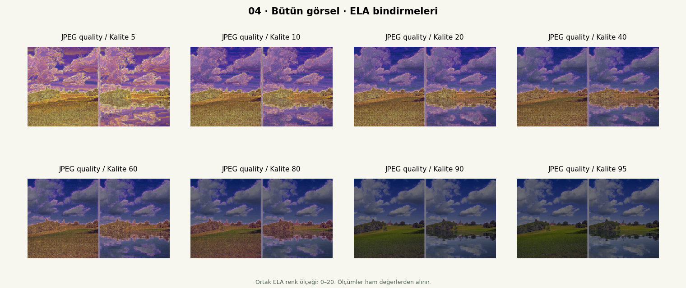
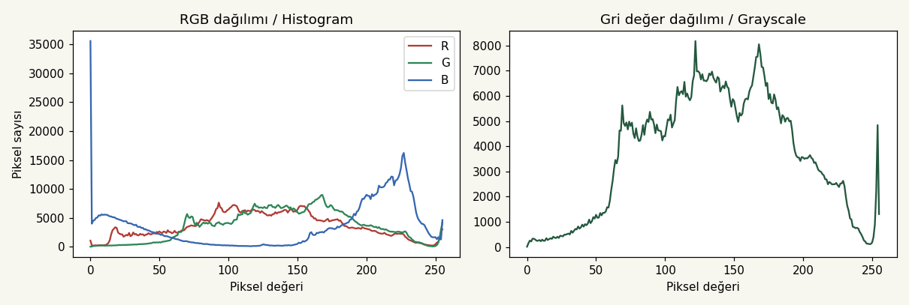
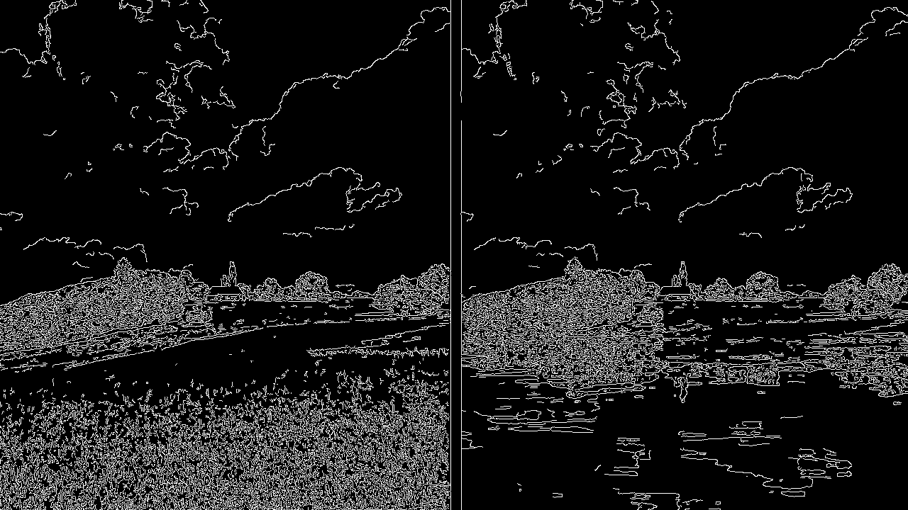
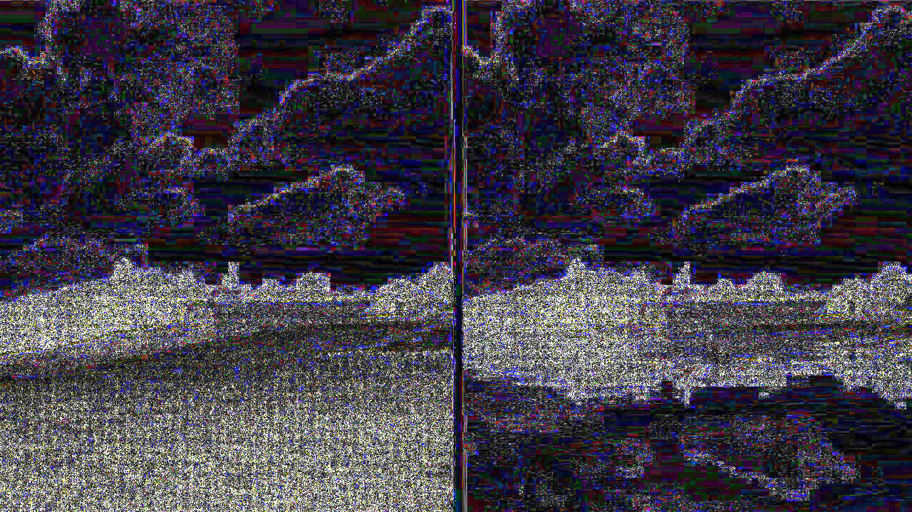

← Bütün görseller · Kalite 20 dosyaları
04 · maxresdefault.jpg
Bütün görseli, sol paneli ve sağ paneli ayrı ayrı incele. Kalite 20 başlangıçta seçili; diğer JPEG ayarlarına da geçebilirsin.
Girdi: JPEG1280 × 720 pikselTam çözünürlükte analizBu rapor neyi ölçüyor? Görüntüyü yeniden JPEG yapıp piksel farklarının üç kanaldaki ortalamasına bakıyoruz. Bu dosyada JPEG → JPEG yeniden sıkıştırma farkını ölçüyoruz. Sol ve sağ, yalnızca dosyadaki yerleri anlatır; doğrulanmış orijinal/sahte etiketleri yok.







Analiz süresi: 10.405 ms.
Yüzdeyle gösterilen değer, sadece farkı 20'den büyük piksellerin oranıdır; manipülasyon yüzdesi değildir. P95, piksellerin yaklaşık %95'inin eşit veya altında kaldığı fark seviyesidir.
Kaliteleri topluca karşılaştır
Her kalite aynı giriş piksellerinden başlar. Haritalar otomatik olarak ayrı ayrı parlatılmaz; ortak 0–20 renk ölçeği kullanılır.



Renk dağılımı ve kenarlar


Keskin kenar ve dokular, normal bir fotoğrafta da ELA farkı üretebilir. Bu iki görünüm içeriği incelemeye yardımcı olur; bir sahtecilik tespiti üretmez.
Kalite 20'de renkli farkı da gör

Bu görselde kanallar ayrı tutuldu. ×10 sadece farkları görünür kılmak için uygulanan bir gösterim kazancı; ölçümler bu artırılmış görüntüden alınmaz.
Sol ve sağ panel nasıl incelendi?
Dosya tam ortadan, x=640 sütunundan bölündü. Beyaz ayırıcı çizgiler otomatik olarak temizlenmedi. Bütün kolaj ve iki panel JPEG'e ayrı ayrı çevrildi. Dolayısıyla panel analizi, tam kolajın ELA haritasından kesilmiş bir yakın görünümle aynı deney değildir; JPEG blok başlangıcı ve sınırlar değişebilir. Sol/sağ taraflar aynı orijinalin doğrulanmış eşlenik örnekleri olarak kabul edilmez.